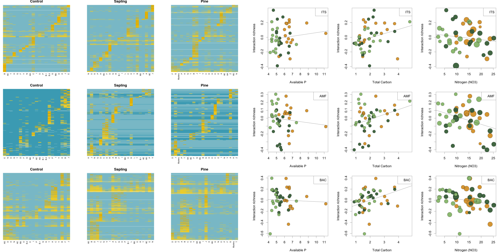

Universe of belowground interactions
Alpine plant communities can rewire microbial interactions but preserve belowground network structures
Reduced interaction richness and increasing generalism

New mechanistic insights into the reorganization of multi-trophic communities in novel ecosystems
Gabriel Muñoz 1
@NasuaResearch
gabriel.munoz@concordia.ca
Isaac Eckert1 Martin Nuñez3 Tonia de Bellis1,2 Jean-Philippe Lessard1
1 Community Ecology and Biogeography Lab, Concordia University, Montreal, Canada
2 Dawson College, Montreal, Canada
3 Grupo de Ecología de Invasiones, CONICET, Bariloche, Argentina
Introduction
Biotic interactions between species are key drivers of many ecological process and can govern the organization of communities.
The functioning of ecosystem level processes in alpine environments can be especially susceptible to biodiversity shifts ( e.g. range expansions creating novel species assemblages).
The overall effects of interaction networks in the assembly of communities is not fully yet understood across trophic scales.
Such impacts may greatly determine the ability of ecosystems to provide specific services to a large portion of the population around the world.
Study area
Non-native (Pinus contorta) pine invasions in alpine Patagonia.

Figure 1: Location of study area

Figure 2: Study site
Methods
45 plots of \(2^2mts\) at 3 temporal treatments
- Belowground interation diversity
- Plant diversity
- abiotic and physical variables
- Arthropod diversity*
Interaction meta-networks for each treatment (T)
Network structural metrics (partial-metanetworks)
Interaction richness relationships with abiotic soil conditions
Key Questions
Is there a congruent change on plant-microbial interactions across distinct trophic groups?
How distinct is the structure of interactions among trophic communities?
How to link up our findings to other environments?

Figure 3: Network structure across trophic groups
Future work
Partitioning variance
Finer taxonomic resolution
Functional aspects of interactions